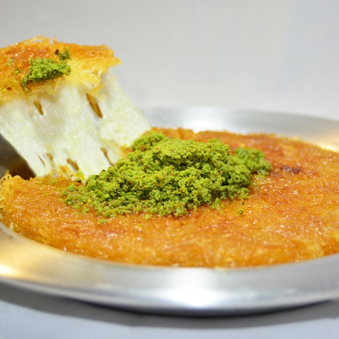

Kuneffe
Kuneffe, also known as Knafeh or Kunafa, is a beloved Middle Eastern dessert made with thin strands of pastry, called kataifi, layered around a soft, stretchy cheese filling. It is baked until golden and crispy, then soaked in fragrant sugar syrup, often flavored with orange blossom water or rose water. Finished with crushed pistachios, kuneffe is known for its delicious contrast of crunchy pastry, melted cheese, and sweet syrup. In some regions, it is also prepared with a creamy filling instead of cheese.
History
Kuneffe has a long history in the Middle East, particularly in the Levant, where it has been enjoyed for centuries. It is strongly associated with the Palestinian city of Nablus, famous for its traditional cheese-filled Knafeh Nabulsiyeh, which is made using a distinctive white cheese. The dessert spread throughout Lebanon, Syria, Jordan, Turkey, and other parts of the region, with each area developing its own variations. In Lebanon, kuneffe is enjoyed during celebrations, family gatherings, and religious holidays, and is often served for breakfast inside sesame bread. Today, it remains one of the most iconic and cherished desserts across the Middle East.
